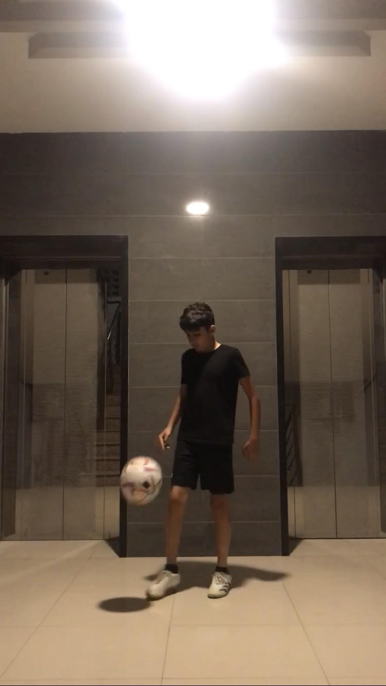

About
My name is Muhammad Uquaily, a 13-year-old exploring software development through Codecademy's Full Stack Engineer course. This journey is enhancing my coding skills and showing me the creative potential of programming. My hobbies outside coding include football, which hones my teamwork and strategic thinking, and reading, which broadens my horizons. I maintain a fitness routine for physical and mental well-being. You can follow my coding adventure and personal growth on Instagram @muhammaduquaily, where I share updates and connect with the coding community.
